Hollbium
Our Mission
Our mission is to offer designed tech solutions that revolutionizes the relationship between urban vertical farming, sustainability and well being. We focus on service excellence to provide solutions that meets the specific needs of our customers.
How we get there
Blabla
About Us
Starting out in a basement in the suburbs of Stockholm, we are an out-of-the-box startup. We are passionate about the intersection of design, technology and urban farming. We are a sustainable business that delivers designed vertical farming tailored for urban spaces, mainly indoors. We believe that through each square meter of unused vertical space that we conquer, we directly help businesses to become the game changers in the battle towards a more sustainable and locally sourced food production. At the same time, we work toward improving the well-being and quality of life in urban spaces.
Who is Hollbium?

Name, title
blablabla
Name, title
blablabla
Name, title
blablabla
Name, title
blablabla
Contact Us
Contact form